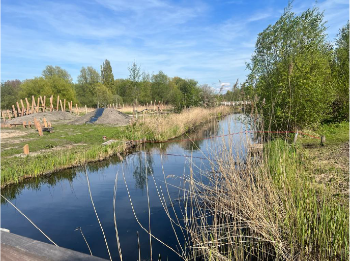
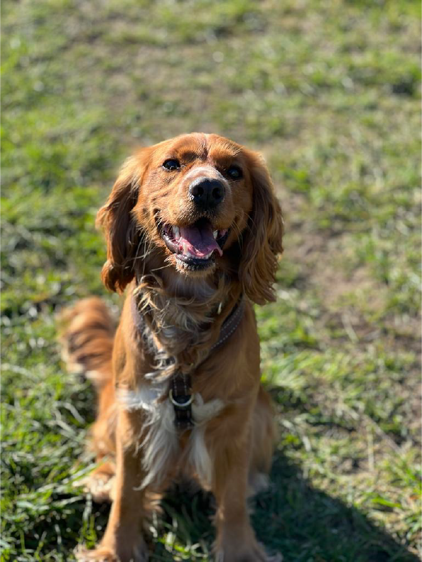

Bretten routes
Houd je van een beetje avontuur? Ga dan wandelen, fietsen of skeeleren in een van deze routes in de Bretten! Leuk voor kinderen en de ruige natuur zit vol met bijzondere planten, kruiden en dieren.
Van station Halfweg-Zwanenburg naar Amsterdam Sloterdijk
Deze route van Halfweg-Zwanenburg naar Amsterdam- Sloterdijk (of omgekeerd) is wel 10 kilometer lang! Je struint over dijken, langs kanalen en slingerende paden. Zo kun je met kinderen vanaf een jaar of 10 op een avontuurlijke wandeling gaan. Er is een nieuwe speeltuin in de Bretten gebouwd met een klimrek, schommels en een glijbaan. Ook is er een klein trekpontje. Honden zijn toegestaan als er maar geen schapen over de dijk lopen. Deze heerlijke wandelroute is gemaakt door de NS.
